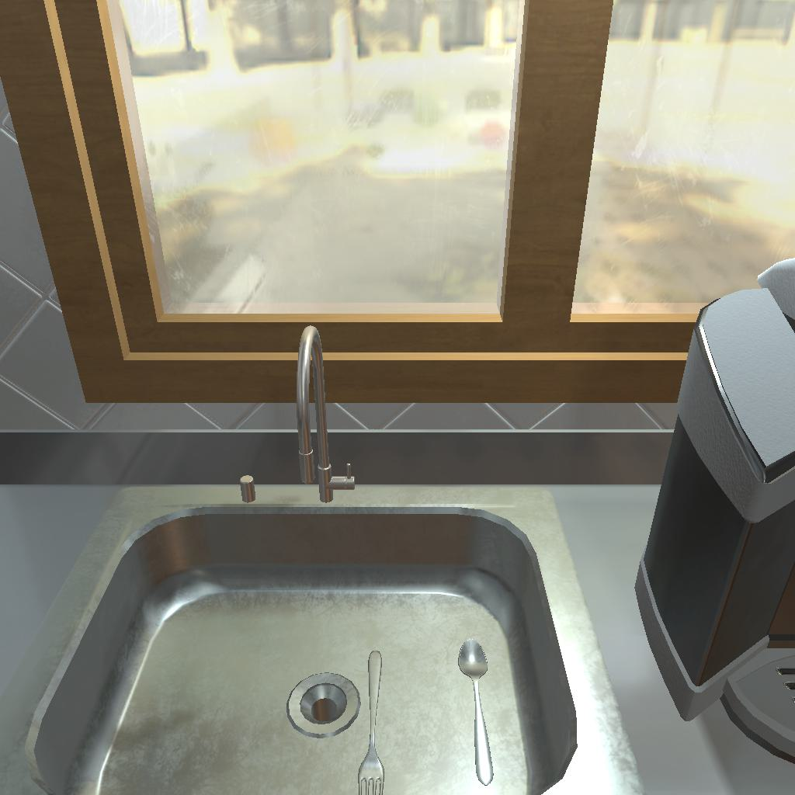

---------------------------------------------------------task: 21---------------------------------------------------------
--------------------------------------------------------------------------------------------------------------------------------------------------------------------
--------------------------------------------------------------------------------------------------------------------------------------------------------------------
Step:--------------------------------------------------------------------------0-------------------------------------------------------------------------------
----------------------------------------
VLM Prompt:
Image1:
**Instruction**
1. Analyze the provided images to identify all visible household objects and compare the difference between images (e.h. whether the object is opened or not and taken on hand or not), focusing on those relevant to the task description "heat some cup and put it in countertop."
2. Use the analysis of images and the task hint "The agent must find an object of the desired type, pick it up, go to a microwave, heat the object with the microwave, then find the correct location to place it, and put it down there. The agent does not need to use the microwave button or open the microwave to heat the object, and the agent just needs to do action that is "heat the object with the microwave"." to answer the question: what is the most reasonable action in the choices for the task description "heat some cup and put it in countertop"?
3. Decide and write the answer using the template: The answer is: (i): , where i is the real number. If there is no desired object in images, search every place based on **Initial Observation** to find the object. And if no one is exactly correct, choose a similar answer.
**Initial Observation**
You are in the middle of a room. Looking quickly around you, you can see cabinet (1-6), microwave (1), countertop (1-2), coffeemachine (1), toaster (1), sink (1), sinkbasin (1), fridge (1)
**Answer Choices**
(1): go to cabinet 1
(2): go to cabinet 2
(3): go to cabinet 3
(4): go to microwave 1
(5): go to cabinet 4
(6): go to cabinet 5
(7): go to cabinet 6
(8): go to countertop 1
(9): go to coffeemachine 1
(10): go to toaster 1
(11): go to countertop 2
(12): go to sink 1
(13): go to sinkbasin 1
(14): go to fridge 1
**Answer**
Let's think step by step by following the instructions.
----------------------------------------
----------------------------------------
Original Response:
The task description is "heat some cup and put it in countertop." From the initial observation, the agent is in the middle of a room with several cabinets, a microwave, countertops, and other appliances.
Image1:
We see a sink with a fork and a spoon, but no cup is visible. The task requires finding a cup, heating it in the microwave, and putting it on the countertop. Since we do not see a cup in the sink or on the visible countertop, we must look for it in other places.
Based on the given task, the most logical first step would be to find a cup. Cups are usually stored in cabinets, so the agent should check the cabinets first.
The answer is: (1): go to cabinet 1. If the cup is not found in cabinet 1, the agent should continue searching cabinets 2-6. Once a cup is found, the next steps would be to go to the microwave to heat it and then place it on the countertop.
----------------------------------------
----------------------------------------
>>> Refine Original VLM Response and Get Pure Action: go to cabinet 1
----------------------------------------
-----------------------------------------------------------------
Running time: 9.608217716217041 seconds
Total Money: 12.812149999999997
-----------------------------------------------------------------
-----------------------------------------------------------------
Text Observation:You arrive at loc 0. The cabinet 1 is closed.
-----------------------------------------------------------------
UNSUCCEED